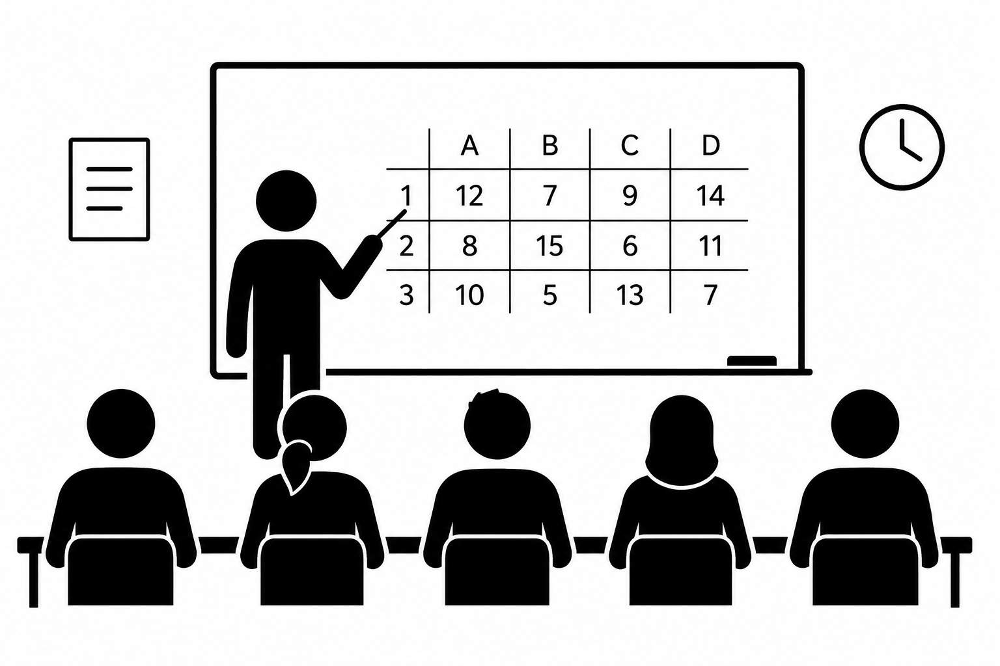
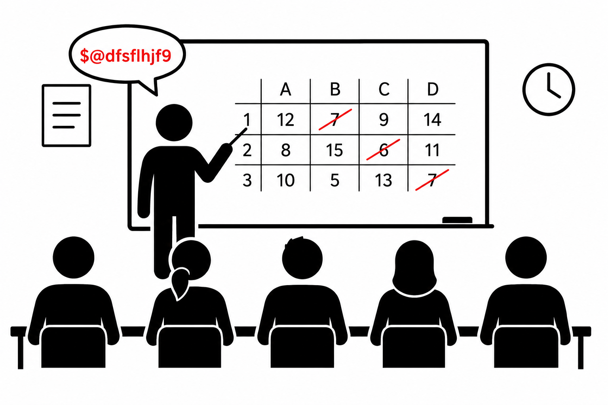
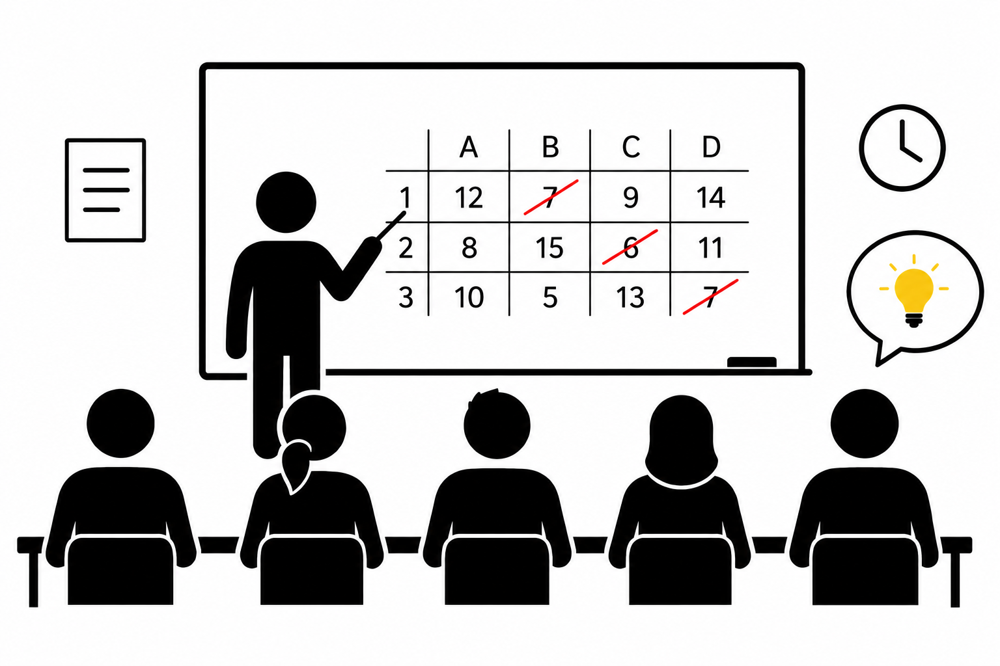
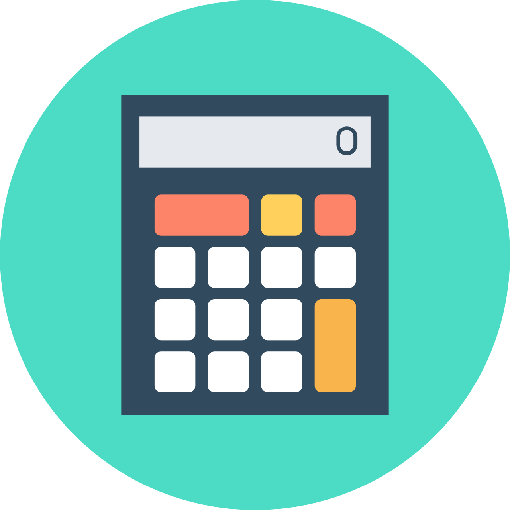
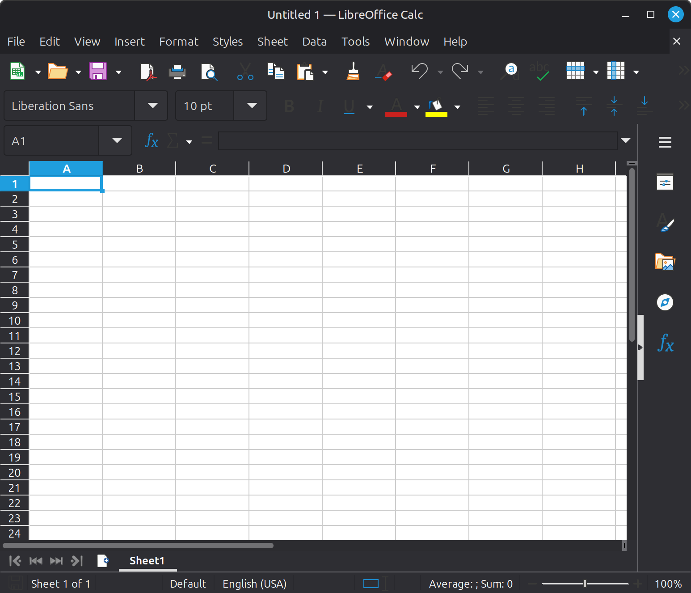
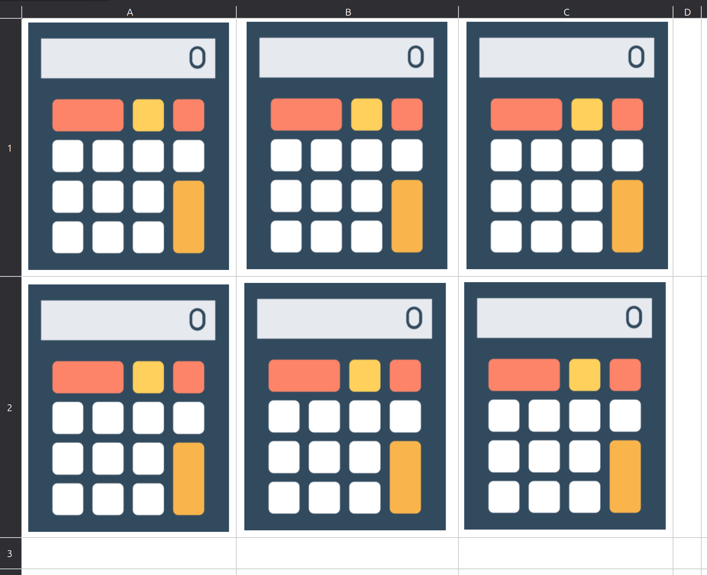

Computer Processing
of Data
Hello
And welcome to the University
And to this wonderful course
What we are going to study:
The computer processing
of data
(using spreadsheets)
First-year Computer Science studentsExcel is the most widely used tool for handling scientific data (ahead of Python/R among non-specialists)
Second-year Chemistry students~70–80% of researchers use spreadsheets (Excel, Google Sheets…) in their workflow
Some very telling figures:
more than 750 million people use Excel
~81% of businesses use Excel as their primary analytics tool
~90% of large companies rely on business-critical Excel spreadsheets
But when used poorly…
it can lead to errors
with serious consequences
A company is preparing to pay dividends.
❌ An accountant forgets a simple - sign before a $1.3 billion loss.
➡️ The loss becomes a profit.
💸 The dividend amount is off by $2.6 billion.
A single-character error!
In the United Kingdom, candidates are interviewed to become anesthetists.
❌ When the Excel files are merged, the wrong column is copied.
➡️ The candidates’ ranking replaces their score.
👨⚕️ Some excellent candidates are rejected.
Just one misaligned column.
row = experiment
column = variable
no need to write lots of code
easy to share
A table is the “natural” form of experimental data
Even modern programming languages use tabular structures
A significant share of scientific errors comes from… Excel
(e.g., genes renamed automatically known bugs)
Hence the paradox:
dominant tool
but methodologically fragile
(and that is perfectly normal)
Think of this as an introduction
to the academic and professional worlds
You will need to read documentation, understand concepts, and apply them
LibreOffice Calc
(English version)
And why not Excel?
All course materials are here
Submissions and some additional information are here
Important
TID_2026
(Enroll now)
https://community-sciences.unilim.fr/course/view.php?id=1873
AND
If you have understood the course
And have practiced a little
you will be fine :)
Build something
you enjoy
A spreadsheet is not just
a calculation tool.
It is a tool
for building systems.
Individually or in pairs
A single spreadsheet file:
.ods.xlsxor a Google Sheets linkREADME or Presentationfor each individual or pair member(step by step)
At first:
it is simple
By the end:
it is powerful
OK
All right, let’s get started!
data?(Not as obvious as it may seem)
= an encoded observation
Measured temperature: 23°C
data: 23
A student scores 14/20
data: 14
Data is not reality itself
it is a trace of reality
23°C
= an encoded observation
Can be
Yesterday: 21°C
Today: 23°C
Tomorrow: 25°C
Is this still a single piece of data?
Nope
Multiple observations
Yesterday: 21°C
Today: 23°C
Tomorrow: 25°C
This is still manageable, but…
A problem is beginning to emerge: it is not well structured
And it is becoming difficult to read
Yesterday: 21°C
Today: 23°C
Tomorrow: 25°C
| Day | Temperature |
|---|---|
| Yesterday | 21 |
| Today | 23 |
| Tomorrow | 25 |
We have just invented… a table
What if we add another variable?
| Day | Temperature |
|---|---|
| Yesterday | 21 |
| Today | 23 |
| Tomorrow | 25 |
| Day | Temperature | Humidity |
|---|---|---|
| Yesterday | 21 | 60 |
| Today | 23 | 55 |
| Tomorrow | 25 | 50 |
Each row = one observation
Each column = one variable
A table =
observations
described by variables
Also…
The same table
can be organized differently
| Day | Temperature | Humidity |
|---|---|---|
| Yesterday | 21 | 60 |
| Today | 23 | 55 |
| Tomorrow | 25 | 50 |
Observation in a
rowVariable in a
column
| Yesterday | Today | Tomorrow | |
|---|---|---|---|
| Temperature | 21 | 23 | 25 |
| Humidity | 60 | 55 | 50 |
Observation in a
columnVariable in a
row
This is the most common orientation!
(and the one we will use)
There is no single RIGHT orientation
But one orientation is more practical:
Observation = row
Variable = column
Why?
One row
= one situation
One column
= one piece of information
A table is not merely a tool…
it is a consequence
table… what can we do with it?| Day | Temperature | Humidity |
|---|---|---|
| Yesterday | 21 | 60 |
| Today | 23 | 55 |
| Tomorrow | 25 | 50 |
What can we do with this?
We can analyze the data!
There are two fundamental operations:
Extract
Produce
EXTRACTExtract = select information that is already present
Example:
👉 key idea:
retrieve a value
PRODUCEProduce = create new information
Example:
👉 key idea:
calculation / transformation
| Day | Temperature | Humidity |
|---|---|---|
| Yesterday | 21 | 60 |
| Today | 23 | 55 |
| Tomorrow | 25 | 50 |
Conceptually
average
=
function(range)
Computer processing of data
=
automating these operations
A table is not just for storing data
It also helps us answer questions
How do we do this with a computer?
?



VISICALC
The very first spreadsheet program
(on Mac)
Computing was no longer just for geeks
It became a workplace tool
VisiCalc
Excel
LibreOffice Calc
Google Sheets
The software has changed.
The underlying principles have remained the same.
Let’s see how it works
One piece of data
=
one cell
as the display of a calculator

a considerable number of calculators that can be linked together.


Extract read a cell
Produce write a formula
Example:
B2 21
Every operation begins with one of = + −
otherwise text
=B2 21
A formula can also simply
reference a cell
A formula =
one way to produce data
One advantage of this kind of tool is that:
If a value changes, everything updates automatically
B2:B4
= from B2 to B4 (multiple cells)
=AVERAGE(B2:B4)
We apply an operation
to multiple cells
| A | B | C | |
|---|---|---|---|
| 1 | Day | Temperature | Humidity |
| 2 | Yesterday | 21 | 60 |
| 3 | Today | 23 | 55 |
| 4 | Tomorrow | 25 | 50 |
average = AVERAGE(B2:B4)
B2:B4 21 23 25
average = \(\frac{21 + 23 + 25}{3}\)
average = 23
Phew, it is not too hot at the moment 🤔
We are not merely performing calculations
We are building relationships between data
We use Calc, but what you learn works everywhere
In the practical sessions, we will mainly use Calc, but Google Sheets and Excel work too.
A cell is not just a box…
it is a variable.
A table is not just for storing data
It is used to answer questions
We are not merely performing calculations
We are building relationships between data
We now have
the foundations…
Data
A table
A formula
A system
Welcome to computer-based data processing.
That’s all for today